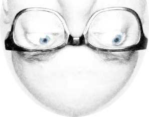

I'm in ur email reading ur messages :)
Dit voorbeeld gebruikt HTML, met een <div> tag en inline styles.
Merk op dat er een afbeelding gebruikt wordt zonder specifieke code om deze te includen.
Er zijn twee aanhangsels:
me_ud.png is een aanhangsel welke inline gebruikt wordt als afbeelding (bovenaan)
PHPMailer is ontwikkeld door:
Auteur: Andy Prevost (codeworxtech@users.sourceforge.net)
Auteur: Marcus Bointon (coolbru@users.sourceforge.net)